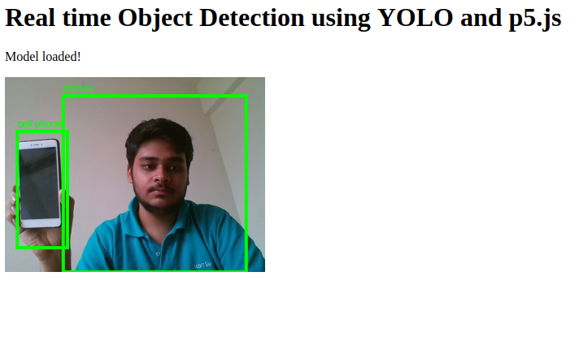

In this blog we are going to develop a live image classifier through webcam feed right in our browser using the model - YOLO
This whole task requires the following two libraries :
ml5.js, an easy-to-use ML framework built on top of Tensorflow.js
p5.js, a JS library to facilitate easy design and drawing functionality
First of all create a directory of the name of your project (say “YOLO-ML5”). Inside the same, create 2 files namely index.html and sketch.js, so that our directory looks like this -
|_ /YOLO-ML5
|_ index.html
|_ sketch.jsHere, we read in the Javascript libraries for usage. This includes both ml5.js and p5.js. You can copy and paste the following code:
<html>
<head>
<meta charset="UTF-8">
<title>Live object detection using YOLO</title>
<meta name="viewport" content="width=device-width, initial-scale=1.0">
<meta http-equiv="X-UA-Compatible" content="ie=edge">
<script src="https://cdnjs.cloudflare.com/ajax/libs/p5.js/0.8.0/p5.min.js"></script>
<script src="https://cdnjs.cloudflare.com/ajax/libs/p5.js/0.8.0/addons/p5.dom.min.js"></script>
<script src="https://unpkg.com/ml5@0.3.1/dist/ml5.min.js"></script>
</head>
<body>
<h1>Object detection using YOLO and p5.js</h1>
<p id="status">Loading Model...</p>
<script src="sketch.js"></script>
</body>
</html>Here we declare and use the model YOLO, along with basic p5.js functions - setup and draw.
Defining variables
let video; //Variable to hold current video stream
let yolo; //Initializing model method with YOLO. A callback needs to be passed
let status; //Status check to determine whthere the model has been loaded
let objects = []; //List of objects returned from YOLOSetup and Draw functions
function setup() {
createCanvas(320, 240); //Creating a standard canvas of 320x240 pixels
video = createCapture(VIDEO); //Capturing live video from webcam
video.size(320, 240);
// Creating a YOLO method using ml5
yolo = ml5.YOLO(video, startDetecting);
// Hide the original video
video.hide();
status = select('#status');
}
function draw() {
image(video, 0, 0, width, height); // Displaying image on a canvas
for (let i = 0; i < objects.length; i++) //Iterating through all objects
{
noStroke();
fill(0, 255, 0); //Color of text
text(objects[i].label, objects[i].x * width, objects[i].y * height - 5); //Displaying the label
noFill();
strokeWeight(4);
stroke(0, 255, 0); //Defining stroke for rectangular outline
rect(objects[i].x * width, objects[i].y * height, objects[i].w * width, objects[i].h * height);
}
}Detection methods
function startDetecting() {
status.html('Model loaded!'); //When the model is loaded
detect(); //Calling detect method
}
function detect() {
yolo.detect(function(err, results) {
objects = results; //Storing results in object
detect(); //Continuous detection
});
}Once we have written the code, we would like to spin up a loval web server so that our browser can render the local files. To do that, we have multiple methods:-
Make sure you are in the directory where the sketch and the index files are present. Fire up the terminal and write
python -m SimpleHTTPServer
The code will be live on the link localhost:8000
The procedure is pretty much the same, but the command this time is python3 -m http.server
Alternatively we can use node.js.
http-server by typing npm install -g http-serverhttp-server -c-1localhost:8080We can see the model running live in our browser. Here’s a screenshot of the same
